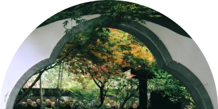
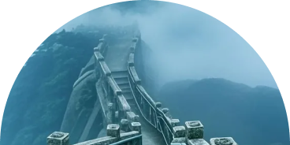
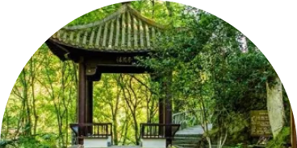
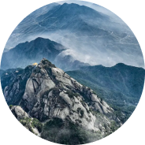

わァわァ、みんなの居場所
わァわァ、みんなの居場所
わァわァ、みんなの居場所
わァわァ、みんなの居場所
わァわァ、みんなの居場所
わァわァ、みんなの居場所
ほおおおん、森で巨大彫刻と
ほおおおん、森で巨大彫刻と
ほおおおん、森で巨大彫刻と

ほおおおん、森で巨大彫刻と
ほおおおん、森で巨大彫刻と
ほおおおん、森で巨大彫刻と
安慶市は安徽省南西部、長江沿岸に位置する。
北西部に安徽省・湖北省・河南省の境をなす大別山の山岳地帯があり、北は六安市、北東は合肥市、西は
湖北省鄂州市、長江の対岸は、東は銅陵市、南東は池州市、南は江西省九江市と向かい合っている。長江
沿岸は非常に多くの湖がある。
安慶（あんけい）は、安徽省の中でひっそりと輝く“忘れられた都市”（ネット民談）です。山あり川あり歴史あり、お菓子も絶品
で、特に懐寧（かいねい）の伝統菓子や桐城（とうじょう）のピーナッツは、一口食べれば止まりません。街角のご年配は、黄梅戯（こうばいぎ）
の話を熱く語り、テレビドラマより面白い！方言はやさしい響きで、ケンカしてもまるでオペラ。昔は陳独秀のような
大物も輩出した知の町。観光地として派手ではないけれど、知れば知るほど好きになる“隠れた名品”都市です。
市轄区：
宜秀区・大観区・迎江区
県級市：
桐城市・潜山市
県：
懐寧県・望江県・宿松県・太湖県・岳西県
万人
総人口
km²
面積
安慶は先史時代から人類が暮らしていた。近年の考古学調査で多くの新石器時代の遺跡が出土し、中でも有名なものは潜山県・薛家崗の遺跡であり、薛家崗文化の基準
遺跡となっている。
安慶は秦代には九江郡に属し、漢代・三国時代・西晋には廬江郡皖県であった。東晋・南朝には晋熙郡懐寧県となり、現在の大観区山口郷と銅陵市樅陽県樅陽鎮付近
に、それぞれ皖口城と呂蒙城が置かれ、長江北岸の重要な軍事要塞であったが、戦乱の時期が過ぎると放棄された。隋代には同安郡、唐代・五代十国・北宋には舒州と
呼ばれた。
最
高
の
グ
ル
メ
大南門の牛肉まん
細切り肉ラーメン
老鶏スープ